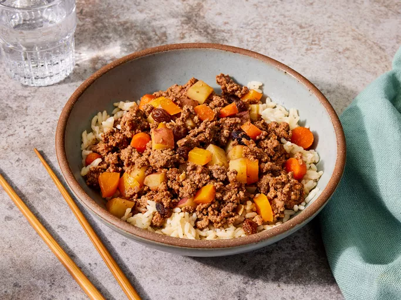

↦ Back to home page
Filipino Beef Giniling (Afritada Style)

Description
This Filipino beef giniling stew is one of my favorite comfort foods. My way of making it is pretty easy and
doesn't take too long. Serve with white rice.
Ingredients
- 1 tablespoon oil, or as needed
- 1 clove garlic, minced
- 2 pounds ground beef
- 1 ½ cups water, divided, or more as needed
- ground black pepper to taste
- 2 medium red potatoes, cubed
- 10 baby carrots, or more to taste, cubed
- 6 tablespoons soy sauce, divided
- ½ cup raisins, or more to taste
- 1 ½ (6.5 ounce) cans tomato sauce with salt
- ½ medium orange bell pepper, diced
- 4 tablespoons white sugar
Steps
- Gather all ingredients.
- Heat oil in a large saucepan over medium heat. Add garlic and cook until fragrant, about 1 minute.
- Add beef and 1/2 cup water; cook and stir until browned and crumbly, 5 to 7 minutes. Season with black pepper
and add more water as needed; do not let beef dry out.
- Add potatoes, carrots, and 3 tablespoons soy sauce; cook for 4 minutes, adding more water if mixture is too dry.
Add raisins and cook for 2 to 3 minutes, again adding water as needed.
- Pour in one can tomato sauce. Fill the can with water and swirl to remove excess sauce; pour into the saucepan.
Stir in remaining 1/2 can sauce until combined. Add more water as needed to create a saucy but not soupy
consistency.
- Stir in bell pepper, sugar, and remaining 3 tablespoons soy sauce. Cook, stirring occasionally and adding water
as needed so sauce does not dry out, until all vegetables are tender, about 3 to 5 minutes.